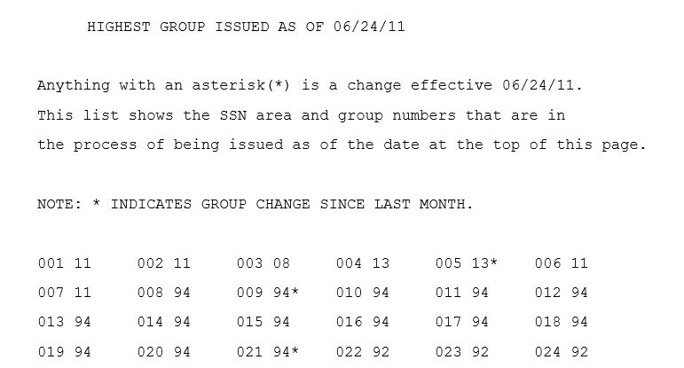

Every month, the SSA published the
highest group (93 files, 2003-2011) of numbers allocated. From this list it was possible to correlate the approximate date of issue for a particular SSN. The reason for this is that the Serial (Last 4 digits) were typically allocated consecutively - so by knowing the date of last issue for a block, one could determine the approximate age, to roughly 1 month resolution. Note - this is the age of ISSUE - not the age of the person. it wasn't until EAB (Enumeration At Birth) became standard practice that this was a closer determination of age. before that, it had more to do that someone received a SSN when they reached working age (~14) or in the 80's, it was assigned somewhere between age 5 - 1 depending on the year as it was required to claim a dependant on US taxes. Even today, the date of issue can still not be used to definitively tell the age of someone. EAB is standard, but SSN's are assigned at immigration, or for work tracking for non residence. In 2011 this sequential assignment was abandoned in favor of random assignment.
The Typical format of this file is as follows:

For a random example - Let's evaluate
088-94-xxxx
1) 01/03/05 = 088 94*
2) ..
3) ..
4) 1/03/07 = 088 94
5) 2/01/07 = 088 96*
1) the '*' here means the number just rolled from 088-92 to 088-94. The reason the predecessor was not 93 is because we are in the sequence that is assigning even, over 10.
2-4) no change listed in monthly high group report
5) the '*' means we have a change. we have rolled from 088-94 to 088-96.
Without further information, the best estimate is a straight line fit with
088-94-0001 issued 1/03/05 until
088-94-9999 is issued in 2/1/2007. Since this us roughly 2 year Span, it could be estimated that
088-94-5000 was issued around 1/15/2006.